Пугало
Класс: Дальний бой
Оружия: Бросок вороной (x2)
Способности: Большие вороньи крылья
Фракция: Фермеры
Стоимость: 1200
Пугало – это хрупкий, но очень мощный юнит, вооружённый воронами в обеих руках. Оно может запускать их на средние расстояния. Несмотря на свою невысокую здоровье и большой размер, Пугало довольно дорогое из-за скорости и силы своих ворон, а также их, кажется, неограниченного запаса. В бою Пугало выпускает ворон с высокой скоростью, но с очень долгим временем перезарядки, что не даёт ему стать слишком мощным. При перезарядке Пугало принимает позу «А», а после перезарядки возвращается в позу «Т», ожидая, когда вороны снова сядут на его руки. Оно выпускает воронов пачками по три штуки, что в сумме даёт шесть воронов при полном атаке. Пугало также имеет пару больших крыльев, которые позволяют ему парить и избегать урона от падений. Внешний вид: Пугало – это большой Вобблер, держащий ворона в обеих руках. Он носит маску, закрывающую его голову, с командными кнопками вместо глаз. На нём длинный рукав с патчем, из которого торчит сено, а также коричневые штаны с двумя патчами, прикреплённые на двух ремнях с командной кнопкой. Его одежда рваная, с заплатами, сшитыми вместе. На ногах – коричневые ботинки, затянутые верёвками, и сено, торчащее наружу. За спиной у Пугала находятся большие, могучие чёрные крылья, украшенные командными манжетами, а на локтях сидят вороны, не имеющие крыльев.